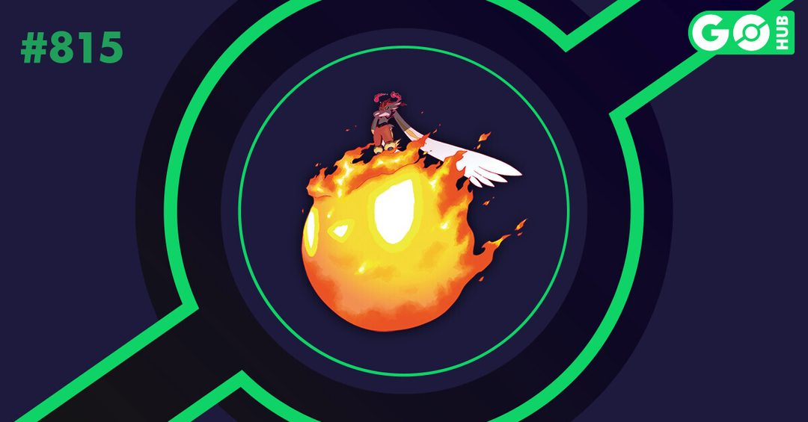

포켓몬고 거다이맥스 에이스번 맥스배틀 공략 졸업스킬 정리, 카운터 약점 복기까지
토요일 오후 2시부터 5시까지, 딱 세 시간만 열렸던 거다이맥스 에이스번 맥스배틀 데이가 어제(10월 3일)로 끝났는데요, 시간대가 빠듯해서 놓치셨거나 몇 판 못 돌고 아쉬웠던 분들이 꽤 계시더라고요. 다음에 다시 열릴 때 허둥대지 않도록 제가 에이스번 약점, 카운터 순위, 졸업스킬 조합, 파티 짜는 순서를 한 번에 정리해 봤어요~
이번 거다이맥스 에이스번 맥스배틀 데이는 어떤 이벤트였나요
이미지 출처: 포켓몬GO 공식 뉴스 · LeekDuck
거다이맥스 에이스번 맥스배틀 데이는 한국시간 2026년 10월 3일(토) 14:00~17:00에 열린 별6 맥스배틀 이벤트였고, 운이 좋으면 포켓몬GO 최초로 등장한 색이 다른 거다이맥스 에이스번을 만날 수 있었어요. 이벤트 중에 붙었던 보너스는 이랬습니다.
- 맥스 파티클 수집 상한 1,600개
- 모든 파워스폿에서 거다이맥스 포켓몬 등장, 파워스폿에서 얻는 맥스 파티클 8배
- 일일 특별한 교환 최대 3회
- 리모트 레이드 일일 상한 10회에서 20회로 상향(10월 4일 12:00까지)
10월 4일 12시 이후로는 전부 끝난 보너스라 쓸 수 없지만, 어떤 판이었는지 알아두면 다음에 같은 이벤트가 열렸을 때 준비 순서를 잡기 훨씬 편하답니다.
거다이맥스 에이스번 약점과 능력치, 보스 기술은 뭔가요
거다이맥스 에이스번은 불꽃 단일 타입이라서 땅·바위·물 기술이 각각 160%로 가장 잘 들어갑니다. 능력치와 상성은 이렇게 정리됩니다.
이미지 출처: 포켓토리
| 항목 | 내용 |
|---|---|
| 타입 | 불꽃 단일 |
| 능력치 | 공격 238 / 방어 163 / HP 190 |
| 최대 CP | 레벨 50 기준 3,412 · 레벨 40 기준 3,018 |
| 잡을 때(포획) 레벨 20 최대 CP | 1,724 |
| 약점 (160%) | 땅 · 바위 · 물 |
| 내성 (62.5%) | 벌레 · 페어리 · 불꽃 · 풀 · 얼음 · 강철 |
보스일 때 쓰는 기술은 노말이 회오리불꽃·몸통박치기, 스페셜이 화염볼·화염방사·니트로차지·기합구슬·블라스트번이에요. 포켓토리 공략에서는 블라스트번·화염볼·화염방사를 위력이 높은 기술로 짚었으니, 버티는 쪽에선 이런 기술이 걸렸을 때 조심하는 편이 좋아요.
거다이맥스 에이스번 카운터 TOP은 누구인가요
거다이맥스 에이스번 카운터 1위는 효율 100%의 거다이맥스 인텔리레온이고, 2위는 92%의 거다이맥스 킹크랩이에요. 포켓토리와 Pokémon GO Hub의 카운터 순위를 맞춰 본 결과예요. 3위부터는 다이맥스 쪽으로 이어지는데 물과 땅 타입이 줄줄이 올라와요.

이미지 출처: Pokémon GO Hub
| 순위 | 포켓몬 | 노말 기술 + 맥스 기술 | 효율 |
|---|---|---|---|
| 1 | 거다이맥스 인텔리레온 | 물대포 + 거다이저격 | 100% |
| 2 | 거다이맥스 킹크랩 | 거품 + 거다이포말 | 92% |
| 3 | 인텔리레온(다이맥스) | 물대포 + 물 타입 맥스 기술 | 78% |
| 4 | 몰드류 | 진흙뿌리기·머드샷 + 땅 타입 맥스 기술 | 76% |
| 5 | 우라오스(연격의 태세) | 폭포오르기 + 물 타입 맥스 기술 | 76% |
| 6 | 거대코뿌리 | 떨어뜨리기 + 바위 타입 맥스 기술(진흙뿌리기를 쓰면 땅 타입) | 70%대 |
거다이맥스 인텔리레온이나 킹크랩이 없으면 어쩌죠? 걱정은 덜어도 돼요. 4위 몰드류와 5위 우라오스가 같은 76%로 바짝 따라오고, 갸라도스(폭포오르기)도 70%대라서 가진 포켓몬 안에서 맞출 길은 꽤 넓거든요.
맥스배틀 졸업스킬은 어떻게 정리하나요
맥스배틀의 졸업스킬은 공식 용어가 아니라, 보스에게 가장 높은 피해를 내는 노말 기술과 맥스 기술의 조합, 그리고 그 맥스 기술을 올려둘 목표 레벨을 가리키는 말로 쓰고 있어요. 역할별로 나누면 기준이 이래요.
어태커는 위 표의 기술 조합에 맥스 기술 레벨을 3까지 올려 주시면 됩니다(포켓토리 정리에 따르면 거다이맥스 기술은 1레벨이 다이맥스 기술 3레벨에 맞먹는다고 알려져 있어요). 탱커는 다이월(피해 감소)과 다이리커버리(HP 회복)를 최대 레벨까지 올리는 게 기준이고요, 노말 기술은 스페셜 기술보다 0.5초짜리 빠른 노말 기술이 에너지 충전에 효율적이거든요.
에이스번을 직접 어태커로 세우는 경우도 있을 텐데요, 이때는 회오리불꽃 + 거다이맥스 기술(영문명 G-Max Fireball) 조합이 최적으로 꼽히고, Pokémon GO Hub에서는 불꽃 타입 맥스배틀 어태커 중 S티어 1위로 평가했어요. 아래 기술 수치도 Pokémon GO Hub 기준이에요. 다만 에이스번 보스가 불꽃 내성이라 에이스번끼리 맞붙을 땐 피해가 깎인다는 점은 기억해 두세요.
| 에이스번 기술 | 위력 | 에너지 | 시간 |
|---|---|---|---|
| 회오리불꽃 | 13 | 9 | 1.0초 |
| 몸통박치기 | 5 | 5 | 0.5초 |
| G-Max Fireball | 350 | 100 | 2.5초 |
확인 위치: 포켓몬GO 공식 뉴스(pokemongo.com/ko) · 인게임 맥스배틀 화면 · 확인되면 해당 문장으로 채워주세요.
| 항목 | 값(확인 후 입력) |
|---|---|
| G-Max Fireball 한글명 | — |
| 재등장 일정 | — |
| 색이 다른 확률 | — |
| 최소 필요 인원 | — |
맥스배틀은 어떻게 진행되고 파티는 어떻게 짜나요
맥스배틀은 파워스폿에서만 열리고, 거다이맥스 맥스배틀은 10~40명이 최대 4명씩 그룹을 나눠 도전하는데, 탱커로 맥스 미터를 채운 뒤 어태커로 바꿔 맥스 기술을 넣는 흐름이에요. 전투 중에 알아둘 규칙은 이렇습니다.
- 보스는 3초에 한 번 단일 또는 전체 공격을 해요
- 대상을 노리는 공격은 피해가 2배인데, 2초 동안 줄 3개가 뜰 때 스와이프로 피할 수 있어요
- 시간 제한은 없지만 6분이 지나면 보스 공격력이 크게 오른다고 알려져 있어요
- 전원이 기절해도 탭 응원으로 맥스 미터를 채울 수 있어요
이 규칙대로 파티를 한 줄씩 체크하면 이렇게 됩니다.
- 탱커 1마리는 레지락(록온 + 스톤에지) · 암스타(물대포 + 하이드로펌프) · 스이쿤(물대포 + 하이드로펌프) · 라티아스(용의숨결 + 파동탄) 중에서 골라요
- 백업으로는 해피너스(막치기 + 파괴광선)는 다이월 담당이 따로 있을 때, 투구푸스(머드샷 + 스톤에지)는 다이월을 같이 쓸 때 세워요
- 어태커는 카운터 표에서 가진 순서대로 위에서부터 채워요
이기고 나면 에이스번을 잡는 포획 단계로 넘어가요. 맥스배틀에서 이기고 이어서 포획하는 방식은 공식 안내에도 나와 있답니다.
자주 묻는 질문
Q. 보스 기술이 마음에 안 들면 다시 들어가도 되나요?
입장할 때마다 에이스번이 쓰는 기술이 랜덤으로 정해져서, 까다로운 기술이 걸렸다면 나갔다가 다시 입장해서 쉬운 기술이 나오는 판을 골라 도전할 수 있어요.
Q. 다이버섯은 어떤 아이템인가요?
맥스배틀에서 내 피해를 2배로 올려 주는 아이템이에요. 계정당 한 번 5분 동안 체험해 볼 수 있다고 알려져 있어서, 처음이라면 이 체험판부터 써보는 분들이 많더라고요.
Q. 다음 재등장 일정이 나왔나요?
현재 확인된 공식 안내 기준으로는 거다이맥스 에이스번 맥스배틀의 다음 재등장 일정이 나온 게 없어요. 10월 4일 기준 공식 뉴스에서 확인되는 건 10월 3일 하루짜리 일정뿐이라서, 새 소식이 나오면 그때 다시 정리해 드릴게요.
거다이맥스 에이스번 맥스배틀 정리
정리하면 에이스번은 땅·바위·물이 약점이라 거다이맥스 인텔리레온과 킹크랩이 1·2위 카운터고, 졸업스킬은 표의 노말 기술과 맥스 기술 조합에 맥스 기술 레벨 3까지 올려두는 걸 기준으로 보면 돼요. 탱커 한 마리에 백업, 어태커 순서만 미리 챙겨 두면 다음 판은 훨씬 여유로울 거예요. 놓치셨던 분들도 다음 기회에는 느긋하게 도전해 보시길 바랄게요, 즐거운 맥스배틀 되세요!
참고한 곳
· 포켓몬GO 공식 뉴스 — 거다이맥스 에이스번 맥스배틀 데이 2026
· 포켓몬GO 공식 — 맥스배틀 안내
· Pokémon GO Hub — 거다이맥스 에이스번 맥스배틀 카운터
· 포켓토리 — 거다이맥스 에이스번 맥스배틀 공략
· LeekDuck — 이벤트 안내
✔ 포켓몬GO 같이 보기 좋은 내용
· 포켓몬고 과사삭벌레 진화 애프룡 단지래플 과미르 사과 사탕 총정리, 과미드라 조건까지
· 포켓몬GO 다투곰 진화조건, 포켓몬고 링곰 깜지곰사탕 100개 보름달 타이밍까지
· 포켓몬고 제르네아스 레이드 공략 약점 정리, 졸업스킬 카운터 포획 팁까지